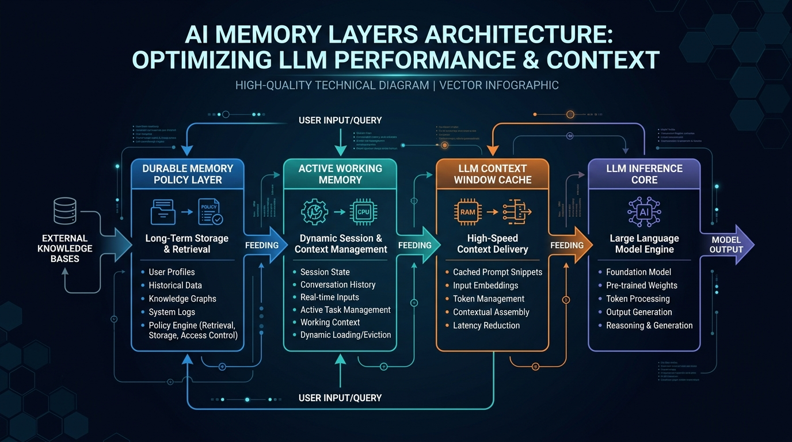

Durable Memory: Why Vector Databases Aren't Enough

Part 3 of the Building the AI Memory Stack series
The context window isn't memory. It's the CPU cache of AI. Active working memory acts as RAM. But when a task finishes, where does information actually go?
Most engineering conversations stop at a simple answer: "The vector database."
That answer isn't wrong. It's just incomplete. A vector database is one implementation of durable memory. It is not the architectural definition of durable memory.
Durable Memory Is Curated
If Active Working Memory is RAM, Durable Memory is not simply "disk."
+---------------------+ +-----------------------+ +-------------------+ +-----------------+
| DURABLE MEMORY | --> | ACTIVE WORKING MEMORY | --> | CONTEXT WINDOW | --> | MODEL INFERENCE |
| (Curated Policies) | | (Task-Assembled) | | (L1/L2 Cache) | | (Execution) |
+---------------------+ +-----------------------+ +-------------------+ +-----------------+Disk stores everything. Durable Memory stores what the system intentionally decides to preserve. Durable Memory is not a place. It's a policy.
A durable memory layer may contain:
- Specifications & Architecture Decision Records (ADRs)
- User preferences & verified domain policies
- Signed evidence & verified observations
- Historical interactions & provenance chains
- Scratch calculations & intermediate tool outputs
- Duplicate observations & ephemeral prompt context
- Unverified hypotheses & temporary cache files
What Survives Matters
Not everything that passes through inference deserves to become memory.
Consider an autonomous agent maintaining a software repository. In a single execution run, it might retrieve several ADRs, inspect a dozen Git commits, read open issues, call three diagnostic CLI tools, and generate intermediate summaries.
When the task finishes, should all of that become memory? Of course not.
Memory Is a Write Problem
Enormous engineering effort goes into retrieval: embedding strategies, chunk sizes, hybrid search, semantic similarity, and re-ranking pipelines. Yet comparatively little attention is paid to the opposite question: Should this be remembered at all?
+-----------------------+
| OBSERVATION / OUTPUT |
+-----------------------+
|
v
+-----------------------+ Is Authoritative?
| WRITE BOUNDARY | --> Is Verified?
| (Write-Side Custody) | --> Is Duplicate?
+-----------------------+ Has Expiration?
|
v [Passed Policy]
+-----------------------+
| DURABLE MEMORY |
+-----------------------+Every stored artifact: 1. Becomes future context. 2. Carries an ongoing maintenance cost. 3. Competes for future retrieval.
Every write is a promise to your future retrieval system. A system that remembers everything eventually remembers nothing particularly well—falling into what the Sovereign Systems Specification calls the Digital Attic, where indexed context degenerates into "confident garbage."
When un-sieved context hits the context window, the system falls into Agentic Thrashing: spending precious inference cycles attempting to reconcile contradictory history rather than making forward progress.
Storage vs. Memory
Storage answers: Can we keep this? (Filesystem, Object Store, S3) Memory answers: Should we keep this? (Durable Memory Policy & Governance)
Information without provenance is just gossip. Write-side custody establishes provenance handles at the moment of entry, allowing read-time hydration to re-validate live dependencies (such as revoked certificates or narrowed security mandates) before allowing durable knowledge back into active reasoning.
Frequently Asked Questions (FAQ)
What is the core takeaway of this guide?
This guide establishes production patterns and verifiable architecture standards designed to eliminate engineering friction, improve reliability, and optimize system performance.
How can teams implement these patterns safely?
Start by auditing your current pipeline, applying clear boundaries, enforcing verification commands on disk, and introducing automated checks gradually.
Where can I find additional technical reference code?
Check the StackScout open-source repository on GitHub for full runnable code samples, architecture benchmarks, and continuous deployment configurations.
Preventing RAG API Hallucinations: Least-Derived Evidence & Grounding
How to prevent hallucinations in RAG-powered API applications by enforcing least-derived evidence and strict grounding policies.
Read article →File-Based Multi-Agent State Machines for Deterministic Code Generation
Designing file-based multi-agent state machines for reliable, deterministic code generation without complex framework overhead.
Read article →